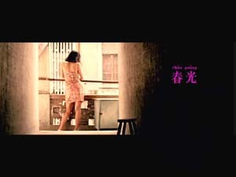
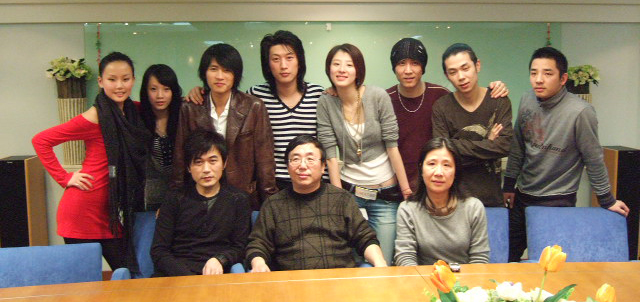

韩寒是我的师兄，我们同属环球音乐厂牌天韵文化旗下，师兄在发行自己第一张唱片时候，大手一挥，自己导演了n个MV，n>5，即使不是自己导演的，也加入了自己的意见和想法，自己的独特视角，配合自己写的歌词意境．我也有幸出演了两个师兄的mv，算第一次触电！因为师兄的鼓励才越来越在演戏上有自信．
《春光》的MV里颜色调配得非常美，都是胶片的拍摄效果

此图已被新浪删除，无法离线显示
原来没见过他之前，还有点怕怕的，觉得和这么一个犀利的人讲话一定压力很大。可是拍MV的过程我知道我错了，师兄人超好，完全不会给人压力，话很少，声音也温柔（>_<）在MV现场也穿得特别随便，中裤，拖鞋。即使这样，他身上仍然有一种力量，让人信服。他在和冯老师说话的时候很乖，口头禅一个字：“行”。语气，，，不知道可以怎么形容。虽然人很光芒，但是很有亲和力。
我的专辑收歌的过程有一首歌，公司找了师兄来给我填词。那首歌的词曲我都非常喜欢，后来没有收在专辑里算一个小小的遗憾。不过后来才知道，师兄原来还给师姐萨顶顶写过一首词，写好之后在她那里却没有通过！哇哈哈哈哈哈，估计很多人看的时候都会觉得不可思议吧！
今年初公司年夜饭聚餐后大家一起去唱歌，发现他在音乐的喜好方面和他本人一样，淡淡的，不张扬。他会求着周围的人唱给他陈绮贞的歌，别人在唱的时候他会很仔细的听。而且而且，他唱张国荣的歌真的是超级像啊！嘿嘿，我们都鼓励他翻唱一整张哥哥的歌。

六月时候我发行唱片，没想到师兄也来捧场啦！他那个时候正在准备上海场地赛的校车调车试车，以为他不会来了。可是主持人说到有请韩寒的时候，我真的是特别意外！虽然他给了我礼物之后又冲回车队，不过还是特别要谢谢他！
此图已被新浪删除，无法离线显示
此图已被新浪删除，无法离线显示
他对唱歌很随意，就好像他对任何事情都很随意一样。连赛车的比赛，他得了第二还说自己快要开睡着了。他说过，“如果我不能写书，我还可以赛车；如果我不能赛车，我还可以唱歌；如果我不能唱歌，我还可以拍东西；如果我不能拍东西，我还可以养狗。”他对自己生活的规划很清楚，而且全部可以兼得，估计也会有很多人觉得羡慕吧！
现在很希望10月份的时候我可以有空去看他的场地赛上海比赛！祝他新书《光荣日》大麦！